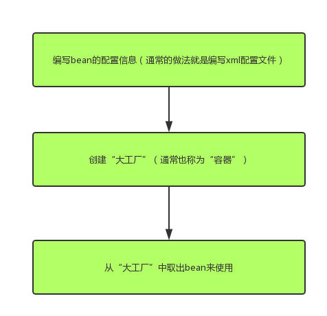

这篇文章主要参考了spring官方文档的第七章
一、IoC简介
IoC的全称是Inversion of Control（控制反转），“控制反转”这个词理解起来有点别扭，所以后来人们就换了一个词DI（dependency injection依赖注入）来描述了。说白了就是用一个“大工厂”把所有的bean都管理起来，要用的时候就从这个“大工厂”里面拿出来。
二、整体流程

编写bean的配置信息
参考spring官方文档的7.2.1 Configuration metadata章节
创建XML文件放到classpath下，文件名可以随意指定（ApplicationContext.xml这个名称比较常用），文件的格式如官网所示：
创建“大工厂”
参考spring官方文档的7.2.2 Instantiating a container章节
直接上官方的代码

从“大工厂”中取出bean来使用
参考spring官方文档的7.2.3 Using the container章节
直接上官方的代码

三、bean配置信息（主要用XML文件）详解